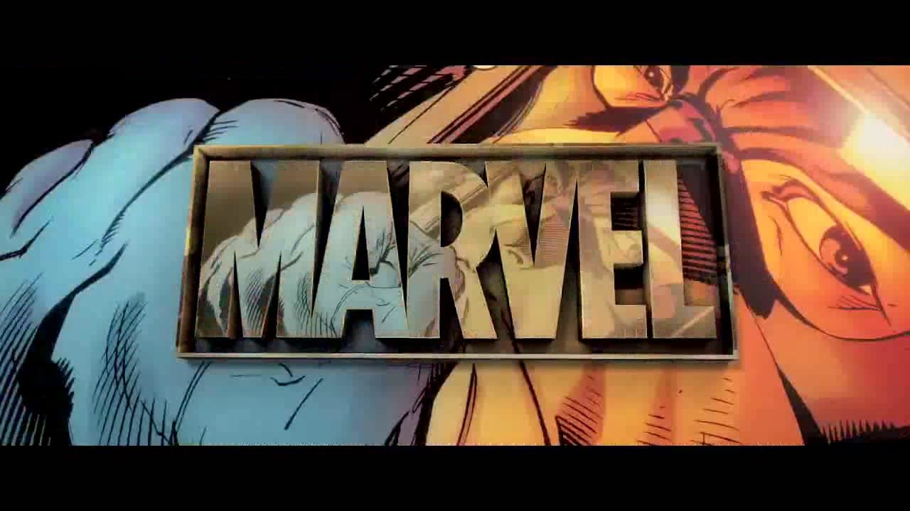
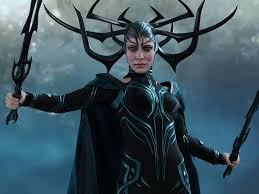
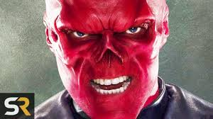
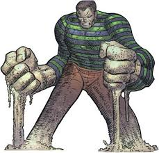
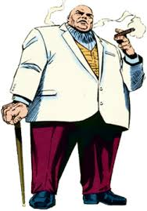

 Thanos grew up in a peace-loving family. However, he began experimenting on other Titans, which increased Thanos' obsession with death and genetic experimentation.
Possessing the DNA of the Deviants and Eternals made Thanos extremely powerful and resilient. Thanos is known as the Mad Titan
Thanos grew up in a peace-loving family. However, he began experimenting on other Titans, which increased Thanos' obsession with death and genetic experimentation.
Possessing the DNA of the Deviants and Eternals made Thanos extremely powerful and resilient. Thanos is known as the Mad Titan

Hela, Odin’s first born and sister to the Asgardian princes, seeks her place as the rightful
heir of Asgard following the death of Odin and her release from imprisonment.

In later comics this Red Skull is identified as the Nazi, Johann Schmidt. After an absence from comics for many years,
both Captain America and the Red Skull were brought back in 1954 in Young Men Comics #24, in a story entitled "Back From The Dead".
 Formerly known as Emil Blonsky, a spy of Soviet Yugoslavian origin working for the KGB, the Abomination gained his powers
after receiving a dose of gamma radiation similar to that which transformed Bruce Banner into the incredible Hulk.
Formerly known as Emil Blonsky, a spy of Soviet Yugoslavian origin working for the KGB, the Abomination gained his powers
after receiving a dose of gamma radiation similar to that which transformed Bruce Banner into the incredible Hulk.

Sandman (Flint Marko) is a fictional character appearing in American comic books published by Marvel Comics. A shapeshifter endowed through an accident with the
ability to turn himself into sand, he began as a villain and later became an ally of Spider-Man.

The Kingpin (Wilson Fisk) is a fictional supervillain appearing in American comic books published by Marvel Comics.
The character was created by Stan Lee and John Romita Sr., and first appeared in The Amazing Spider-Man #50 (cover-dated July 1967).